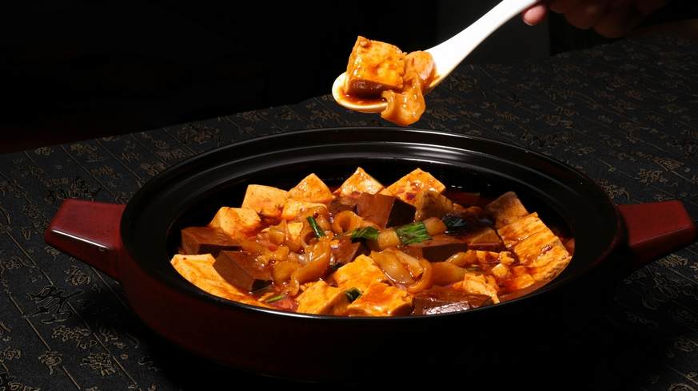
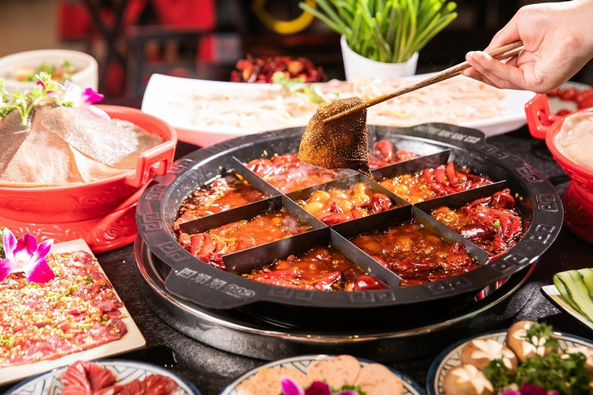
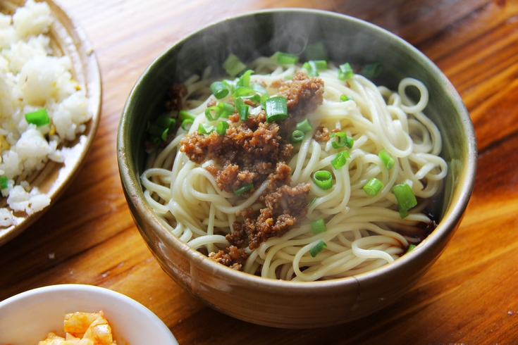

Contexte
Géographie
La cuisine du Sichuan englobe également la cuisine de la municipalité voisine de Chongqing. Le Sichuan et Chongqing faisaient autrefois partie de la même province. Cependant, en 1997, Chongqing a obtenu le statut de municipalité autonome. Néanmoins, les deux régions continuent de partager une culture gastronomique commune.
Le Sichuan s'étend dans le sud-ouest de la Chine, au cœur d'une vaste plaine encadrée par des montagnes, formant ainsi un bassin irrigué par le fleuve Yangzi. En raison de cette configuration géographique, la région est souvent enveloppée de brouillard et bénéficie d'une abondance de précipitations. Son climat subtropical, caractérisé par une humidité persistante, imprègne profondément cette terre fertile.
Grâce à sa topographie relativement plate et à son climat favorable, les sols du Sichuan sont d'une fertilité exceptionnelle. La région regorge de légumes frais et de riz en abondance, tout en offrant un habitat propice à l'élevage d'animaux.
Histoire
Des panneaux de briques sculptées découverts près de Chengdu, datant de la dynastie Han, il y a environ 2000 ans, illustrent des scènes de chasse, de cuisine et de banquets fastueux. Un écrivain de cette époque, Yang Xiong, décrit la manière dont les cuisiniers "mélangeaient les cinq saveurs, créant une harmonie de douceur, préparant des soupes tonifiantes à la pivoine chinoise." Dès le IVe siècle apr. J.-C., un historien nommé Chang Qu remarquait déjà que les habitants de la région étaient particulièrement friands de saveurs intéressantes et de goûts à la fois piquants et parfumés.
Dès le XIIe siècle, sous la dynastie Song, des restaurants sichuanais étaient établis dans la capitale septentrionale de Bianliang, témoignant de l’essor d’une gastronomie régionale déjà reconnue au-delà de ses frontières. Pourtant, aux origines, le piquant de la cuisine sichuanaise ne provenait pas des piments – encore inconnus en Chine – mais d’un trio d’épices puissantes : le gingembre, le poivre du Sichuan et une plante apparentée, le Zanthoxylum ailanthoides, qui finirait par être éclipsée par l’arrivée des piments. Le gingembre du Sichuan jouissait d’une réputation ancienne, évoqué dès le IIIe siècle av. J.-C. dans La Racine des Saveurs, le plus ancien traité gastronomique chinois.
Les piments ne firent leur apparition en Chine qu’à la fin du XVIe siècle, sous la dynastie Ming. Les premières mentions écrites, issues de traités botaniques des provinces orientales du Zhejiang et du Jiangsu, suggèrent qu’ils furent introduits par des marchands portugais. Initialement appelés « poivre barbare » (fanjiao), ces plantes étaient d’abord cultivées pour leurs fleurs blanches délicates et leurs fruits écarlates, bien avant d’être reconnues pour leurs qualités culinaires. Il fallut attendre le XVIIe siècle pour que leur usage en cuisine soit attesté, d’abord dans les provinces de Jiangxi et du Hunan, où l’on en trouve une première mention en 1684. Selon les recherches approfondies du professeur Jiang Yuxiang de l’Université du Sichuan, les piments gagnèrent progressivement la province en provenance du Hunan. Une possible mention de leur culture au Sichuan apparaît au milieu du XVIIIe siècle, mais ce n’est qu’au cours du règne de l’empereur Jiaqing (1796-1820) qu’ils s’y enracinèrent véritablement, devenant un ingrédient incontournable de la cuisine locale.
En matière de piments, les Sichuanais ont toujours privilégié quelques variétés bien spécifiques. La plus emblématique est l’erjintiao, un piment long à peau fine, légèrement piquant, reconnaissable à sa queue recourbée et à son arôme envoûtant. Apprécié pour sa saveur subtile, il est généralement séché ou mis en saumure, révélant ainsi toute sa richesse gustative dans la cuisine locale.
Caractéristiques
Saveurs
La cuisine du Sichuan est célèbre pour son usage d’ingrédients piquants et engourdissants. Les habitants attribuent cette tradition au climat de la région : on dit que l’alimentation aide à évacuer l’excès d’humidité du corps.
Le profil de saveur le plus emblématique est le mala (麻辣), littéralement « engourdissant et pimenté ». Ce goût unique naît de l’alliance du poivre du Sichuan, aux notes citronnées et anesthésiantes, et des piments.
Le sel occupe une place prépondérante dans la cuisine du Sichuan, une influence directe de la ville de Zigong, autrefois épicentre de la production saline en Chine. À son apogée, cette cité fournissait à elle seule un tiers du sel consommé dans tout le pays.
Les saveurs prédominantes dans la cuisine sichuanaise sont mala, salées, acides et le sucrées.
Fermentation
Le sel joue aussi un rôle essentiel dans la conservation des aliments, expliquant la présence marquée de légumes fermentés dans la gastronomie sichuanaise. Le plus utilisé de ces légumes fermentés est le zhacai, un tubercule de moutarde épicé et salé, originaire de Fuling, près de Chongqing.
Les sauces fermentées y occupent une place de choix, à l’image du célèbre pixian douban, une pâte à base de fèves de soja fermentées et de piments, considérée comme la base de nombreux plats sichuanais. Certains considèrent cette pâte comme l'âme de la cuisine sichuanaise, et elle est souvent vieillie pendant plusieurs années pour développer sa saveur.
Terre d'abondance
La région, luxuriante et fertile, regorge de légumes qui composent une grande partie du régime alimentaire local. Véritable terre d’abondance, le Sichuan offre une diversité végétale d'exception.
Enfin, le lapin y est particulièrement apprécié, ce qui est rare en Chine où sa consommation reste marginale. Le climat chaud et humide de la région en fait un terrain idéal pour l’élevage de ces animaux, contribuant à leur popularité dans la cuisine locale.
Classiques
Mapo Tofu
Le Mapo tofu est un plat emblématique du Sichuan, réputé pour sa saveur épicée et son jeu de textures. Il se compose de tofu trempé dans une sauce épicée, généralement une suspension huileuse et rouge vif, à base de douban (pâte de fèves fermentées et de piment) et de douchi (haricots noirs fermentés), agrémentée de viande hachée, traditionnellement du bœuf.
Un autre élément clé du Mapo Tofu est l’utilisation du poivre du Sichuan, qui, en plus du piquant des piments, engourdit légèrement la langue, produisant ainsi la sensation unique de mala.
Il est devenu un classique de la cuisine familiale et peut se trouver dans la majorité des restaurants chinois, y compris ceux qui sont spécialisés dans d'autres cuisines régionales, ainsi que dans des restaurants coréens ou japonais.

La fondue de Chongqing
La fondue de Chongqing, considérée comme la fondue chinoise originale, était consommée par les travailleurs sur les fleuves de la région. Très pimentée, elle est considérée aujourd’hui comme la fondue la plus populaire de Chine.
Il s'agit d'un bouillon épicé bouillonnant dans lequel les ingrédients sont cuits directement à table. Chongqing abrite plus de 10 000 établissements dédiés à ce plat. Les tripes et autres abats y sont particulièrement appréciés en raison de leur prix abordable, devenant des incontournables de ce festin partagé.

Nouilles dandan
Les nouilles dandan se composent d’une sauce épicée, généralement à base de légumes marinés comme le zha cai, d’huile pimentée, de poivre du Sichuan, de porc haché et de cébettes, parfois agrémentée de pâte de sésame et de cacahuètes concassées, le tout servi sur des nouilles. Ce plat peut être servi soit sec, soit sous forme de soupe de nouilles.
Le dandanmian a vu le jour à Chengdu, la capitale du Sichuan. Dans sa version originale, le plat est servi sans soupe, dans un petit bol.
Le terme dandan fait référence à un type de perche portée par les marchands ambulants qui vendaient ce plat aux passants. La perche était portée sur l'épaule, avec deux paniers contenant les nouilles et la sauce fixés à chaque extrémité. En raison du prix abordable des nouilles, les habitants ont progressivement commencé à les appeler « nouilles dandan », en référence à ces vendeurs ambulants. Le nom se traduit littéralement par « nouilles portées sur une perche ».
